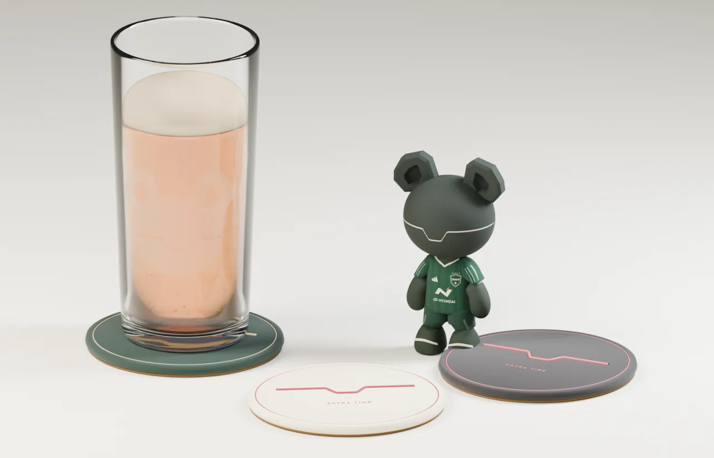
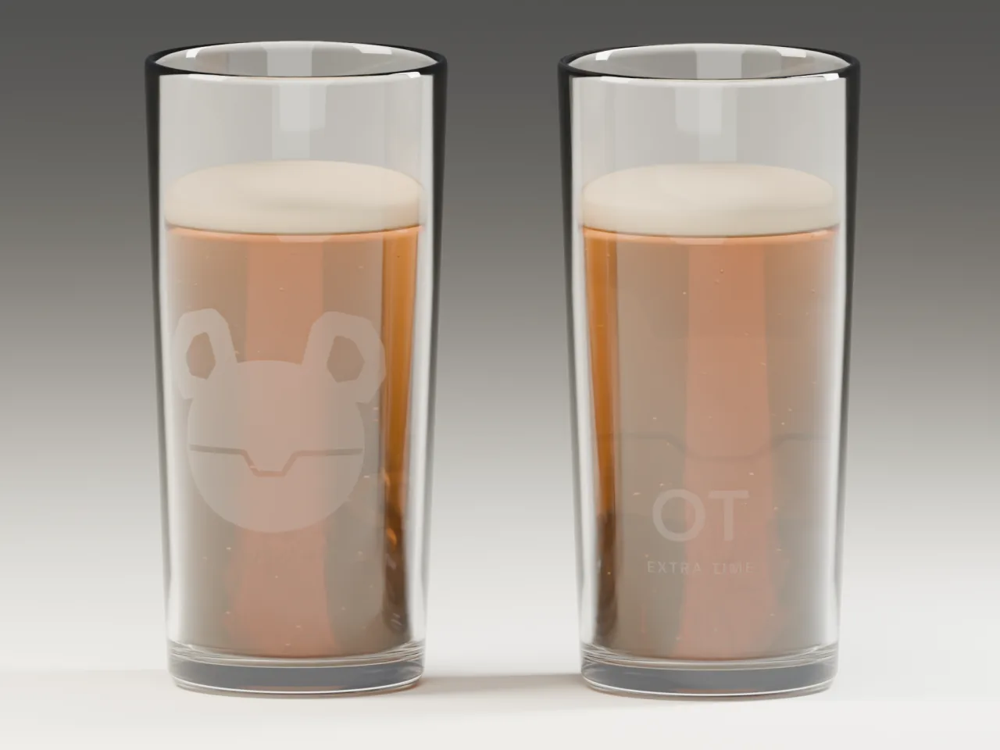
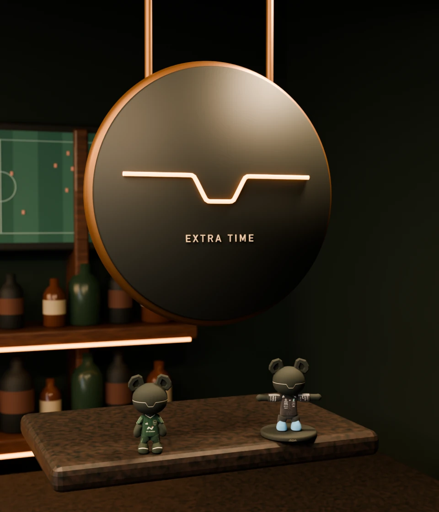

GOODS
굿즈
끝난 밤의 테이블에 남는 것. 오티 맥주잔과 코스터입니다.


BEER GLASS
맥주를 따르면 얼굴의 선으로 빛이 비친다.
오티 머리를 반투명하게 새기고 얼굴선만 투명하게 남겼습니다. 뒷면에는 OT.
COASTER
코스터
뒷면은 그날을 적는 자리입니다. AFTER · DATE · WITH.

GOODS
끝난 밤의 테이블에 남는 것. 오티 맥주잔과 코스터입니다.


BEER GLASS
오티 머리를 반투명하게 새기고 얼굴선만 투명하게 남겼습니다. 뒷면에는 OT.
COASTER
뒷면은 그날을 적는 자리입니다. AFTER · DATE · WITH.
